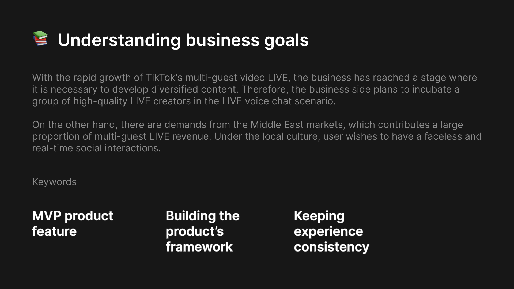
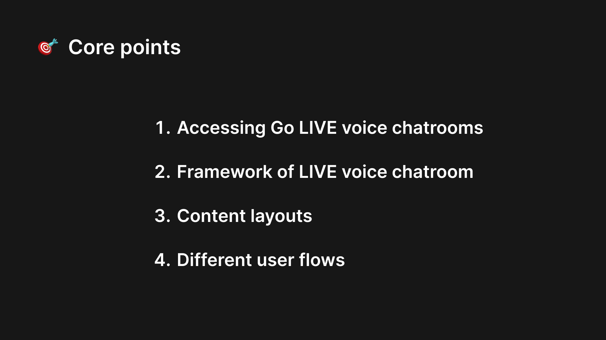
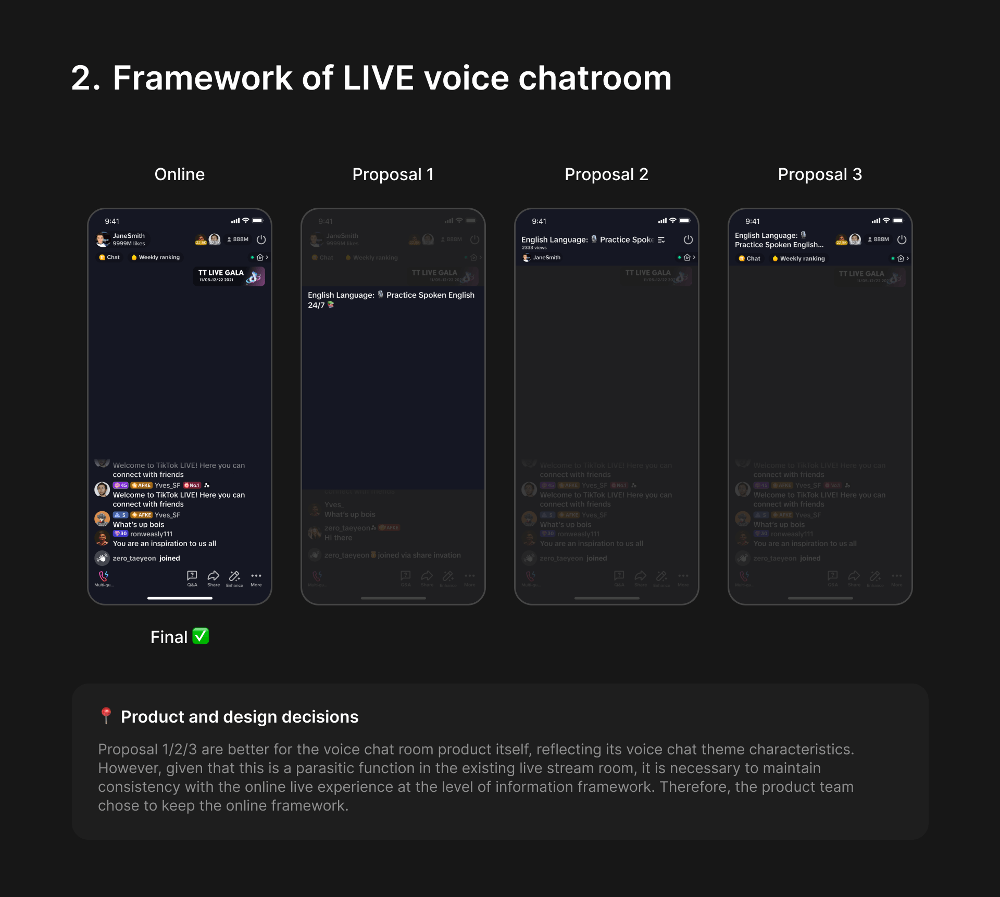
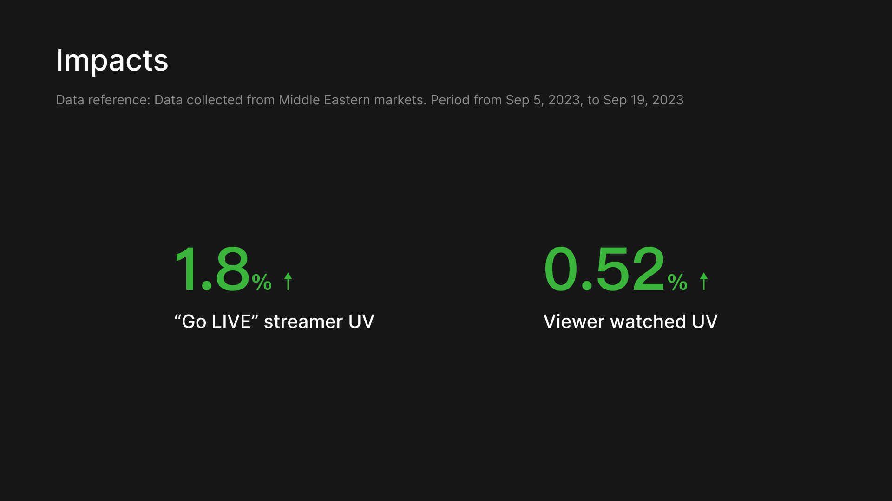
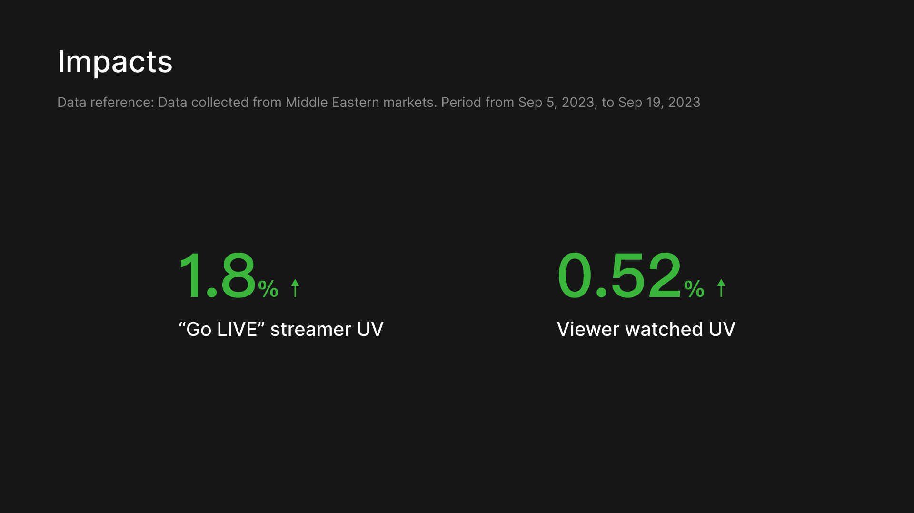
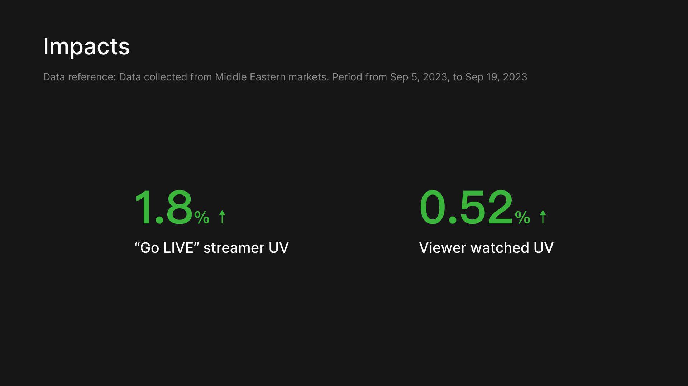

Role
UX/UI Project Lead
Duration
3 Months
Place
Beijing
TikTok LIVE voice chat design from 0 to 1
TikTok LIVE business is developing rapidly in global markets, and the business team want to quickly verify the market value of the voice chat room in TikTok LIVE. Therefore, the development of an MVP version of the voice chat function in Live stream became an urgent need. As the person in charge of product design for this business line, I started from several design core points, and discussed design proposals with PM by short-term and long-term business plan. As a result, it was found that after Live voice chat launched, the streamer UV increased by 1.5%



 


Guest Perspective
Host Perspective